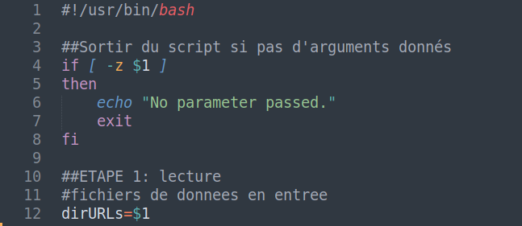
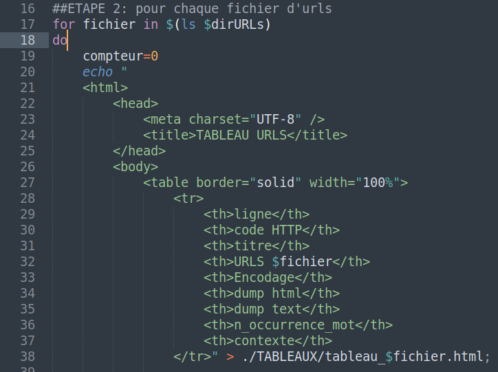
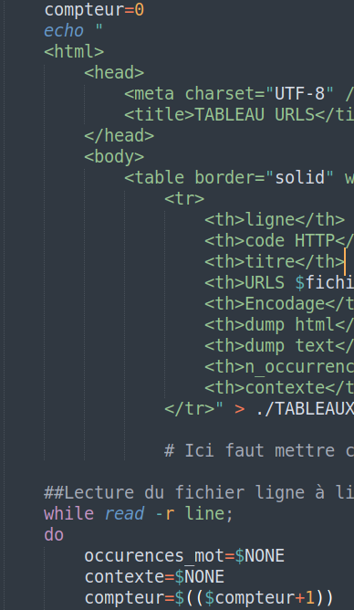
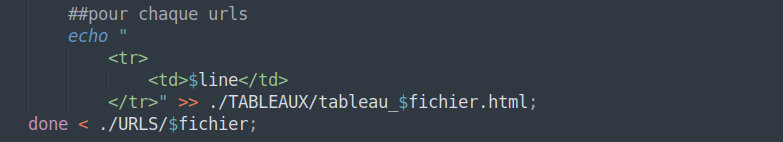

Quatrième étape : Création et premier remplissage des tables HTML.
Une fois le corpus constitué, l'étape suivante a été celle de créer des tableaux HTML (un par langue, donc 4 au total) et de commencer à les remplir. Dans cette optique, il nous fallait écrire un script bash qui accomplisse des opérations sur notre corpus (les 200 urls) et qui intègre aussi du language HTML pour la constitution des tableaux.
En premier lieu, nous avons du écrire en language bash quelques lignes de commande qui puissent vérifier si l’utilisateur a bien inséré l’argument demandé. Étant donné que nous avons décidé d’avoir en tant qu’argument seulement le dossier URLS, nous avons écrit les lignes suivantes :

Ensuite nous avons démarré une boucle “for” qui lit tous les fichiers texte contenu dans URLS et qui crée une table HTML pour chacune des langues. La création de ces tableaux se produit à travers la commande “echo”, commande qui permet d'écrire dans un autre langage da programmation. Ici nous avions besoin d'écrire du HTML afin de générer des tableaux :

Il est important de remarquer que les tableaux HTML ainsi créés sont redirigés vers un nouveau dossier TABLEAUX constitué auparavant à travers la commande “mkdir” du terminal.
Par la suite, nous avons commencé à remplir les tableaux avec la numérotation de 1 à 50 de toutes les lignes contenant les 50 urls et les liens des urls :

Dans l’image ci-dessous on remarque la déclaration d’une variabe “compteur” qui augmente d’une unité à chaque tour de la boucle “while” precédemment créée. Les valeurs succéssifs de cette variable sont ensuite enregistrés dans chacun des tableaux HTML. Concernat la boucle “while”, sa fonction est celle de lire une par une les 50 lignes des fichiers texte contenus dans URLS ; la variable “line” déclarée lors de l’initialisation de cette boucle contient les liens qui seront par la suite inserés dans les tableaux à travers les lignes de code suivantes :
